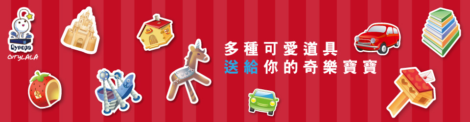

- 


選擇一隻喜歡的奇樂寶寶，一旦選定就得養滿一年。
一年後會問你要不要讓寶寶回牠們的新家鄉，或者繼續留在身邊。
送回家鄉後才能夠養新的奇樂寶。
和寶寶互動，花時間陪伴牠、教育牠、跟他牠玩，這些都是提升親密度的關鍵喔！
在您的陪伴之下，寶寶才會健康的成長，如果您不好好照顧牠，寶寶是會生病的！
餵食寶寶讓它生長，寶寶的成長會根據所攝取的食物或道具
什麼都可以餵給寶寶吃看看，不同的奇樂寶寶餵食不同的東西，變化也不一樣。
奇樂寶寶將會成長成謎樣且獨一獨二的外型